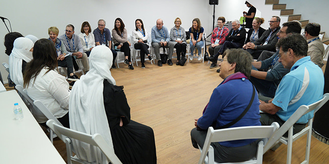
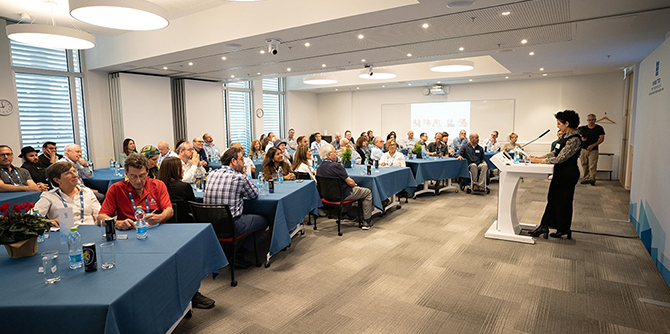

The Mandel Foundation–Israel had the honor of hosting the members of the Board of Trustees of the Jack, Joseph and Morton Mandel Foundation and the members of the Board of Directors of Parkwood (a Mandel private trust company) for a week-long visit to Israel. This important visit, the first of its kind, was the fulfillment of one of
Morton Mandel’s last decisions as Chairman and CEO of the Jack, Joseph and Morton Mandel Foundation.
During the visit, the board members met with graduates, fellows and faculty of the leadership programs of the Mandel Foundation–Israel and saw the ways in which the Foundation’s activities and programs are impacting Israeli society and addressing many of its challenges. They also met prominent Israeli leaders and visited some of the institutions that the Mandel Foundation supports.
The board members spent a day in the Negev region, where they learned about the programs of the Mandel Center for Leadership in the Negev and met faculty and graduates of the Center. As part of this tour, they visited two major sites funded by the Mandel Foundation: Midbarium – The Jack, Joseph and Morton Mandel Animal Park, which is currently under construction, and MindCET – The Jack, Joseph and Morton Mandel Innovation Center, the first EdTech park in Israel. The group was also given a tour of one of the Mandel investments in Israel: Phoenicia Glass Works, Israel's only local glass manufacturer and an important source of employment and development for the region. The group also met with the mayors of Beer Sheva and Yeruham and with leading figures in the local authorities.
Another day of the trip was spent in the North to get to know the Mandel Center for Leadership in the North, where Board members met with several graduates. Before heading north, the group toured the Palmachim Air Force Base and learned about initiatives by graduates of the Mandel IDF Educational Leadership Program that are impacting service in the Israeli military. In the evening, they visited Havat Hashomer, where they met with the Head of the IDF Education and Youth Corps and learned about this unique training base that equips soldiers from at-risk backgrounds with the skills and motivation that they need for their military service and for integration into Israeli society.

Meeting with Mandel graduate Maisa Halabi Alshiech at the Lotus Initiative (Photo: Simanim)
A large portion of the trip was spent in Jerusalem. Board members got to see the new headquarters of the Mandel Foundation–Israel, which opened in 2020, and visited the nearby Jerusalem Botanical Gardens, where an Oak Mile is named for Morton Mandel. The group also met the faculty and fellows of the Mandel School for Educational Leadership and the Mandel Leadership Institute, as well as the staff of the Mandel Graduate Unit.

Learning about the Mandel Leadership Institute from Director Yael Hess (Photo: Simanim)
The board members also visited several important Jerusalem sites and institutions made possible by generous contributions from the Mandel Foundation. They toured the newly inaugurated Jack, Joseph and Morton Mandel Building and Campus of the Bezalel Academy of Arts and Design Jerusalem, which will serve 2,500 art students and is expected to transform downtown Jerusalem into a hub of student life. They also visited the Israel Museum where they toured the Jack, Joseph and Morton Mandel Wing for Jewish Art and Life. At the Hebrew University of Jerusalem, they visited the Jack, Joseph and Morton Mandel School for Advanced Studies in the Humanities and celebrated the 20th anniversary of the Mandel Scholion Research Center.
A highlight of the trip was a reception at the President’s Residence in Jerusalem, where the board members met with
President Isaac Herzog and his wife
Michal Herzog. The board members also attended the dedication of the new Morton L. Mandel Plaza by the city of Jerusalem and the Jerusalem Foundation, an event that was attended by Jerusalem
Mayor Moshe Lion. The plaza, which is located at a prominent site near the historic Montefiore Windmill that overlooks the Old City of Jerusalem, recognizes Morton Mandel's active involvement in Israel and the Mandel Foundation's extensive support for institutions and initiatives across Jerusalem.
The whirlwind visit coincided with the 2022 Mandel Graduation, which celebrated the graduation of 200 Mandel graduates from 10 different programs of the Mandel Foundation–Israel.
{kind=link}
{kind=link}
{kind=link}
{kind=link}
{kind=link}
{kind=link}
{kind=link}
{kind=link}